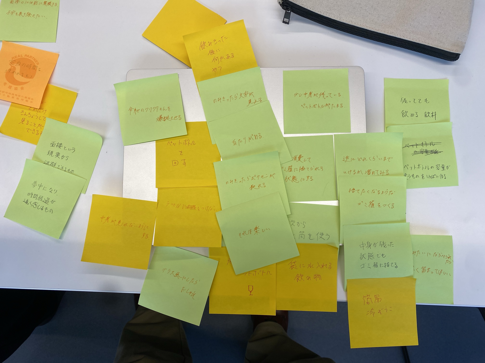
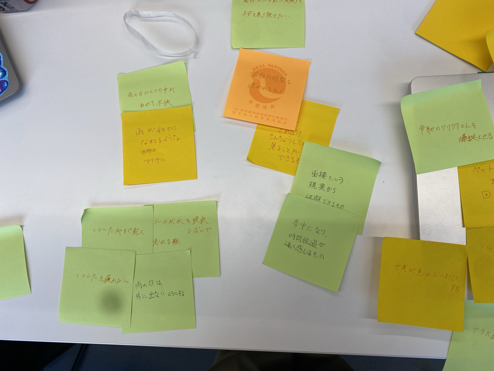

第３回
コード
- const int DIR = 8;
- const int STEP = 9;
- void setup() {
- pinMode(DIR, OUTPUT);
- pinMode(STEP, OUTPUT);
- digitalWrite(DIR, LOW);
- digitalWrite(STEP, LOW);
- }
-
- void loop() {
- // put your main code here, to run repeatedly:
- int val=0;
- val=analogRead(1);
- Serial.println(val);
- if(val<200){
- for(int i=0; i<=300; i++){
- clockwise(5000);
- }
- }
- }
- void clockwise(int delaytime){
- digitalWrite(DIR, HIGH);//HIGHは時計回り
- digitalWrite(STEP, HIGH);
- delayMicroseconds(delaytime);
- digitalWrite(STEP, LOW);
- delayMicroseconds(delaytime);
- }
- void counter_clockwise(int delaytime){
- digitalWrite(DIR, LOW);//はLOWは反時計回り
- digitalWrite(STEP, HIGH);
- delayMicroseconds(delaytime);
- digitalWrite(STEP, LOW);
- delayMicroseconds(delaytime);
- }
HMWとYes,and
僕たちの班は自分の部屋にたまる飲みかけのペットボトルに対する負の感情について話し合いました

